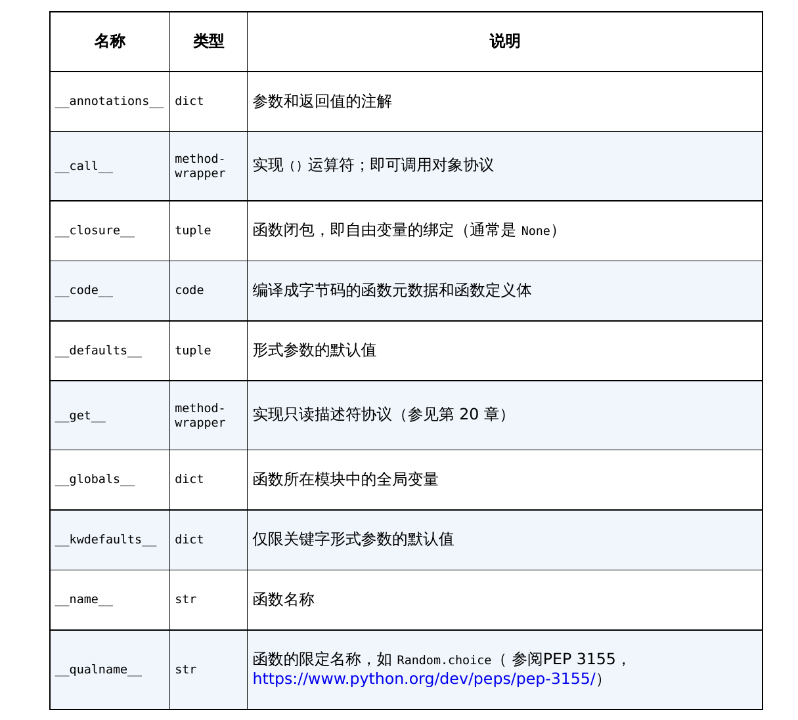

Python进阶部分，数据结构、函数以及类的属性
Python 特殊方法
特殊方法的存在是为了被 Python 解释器调用，自己不需要调用。
例如对自定义的类使用 len(my_object) 就会自动调用 self.__len__()
对内置类型的实例
x使用len(x)，实际上 CPython 会直接从一个 C 结构体读取对象，所以很高效
很多时候，特殊方法的调用是隐式的
__init__()**
__getitem__()**：类定义中实现这个特殊函数，即可迭代，或者切片1
2
3def __getitem__(self, position):
return self._cards[position]
# ._cards 是类的属性由于最终返回值是列表，也可使用所有支持列表的方法。
__iter__()：for i in x迭代时实际上使用x.__iter__()方__repr__()：返回实例的官方表示，也即可以用来初始化的表达式
从下面四个函数可以看出，这一操作类似 C++ 的重载
__abs__()__bool__()__add__()__mul__()
1 | class Vector(): |
<__main__.Vector object at 0x00000194C1EECAA0>
此时没有写特殊方法__repr__ ，所以输出是这样的。加上这个特殊方法
1 | def __repr__(self): |
Vector(1,2)
Vector(2,4)
Vector(2,4)
__str__()如果一个对象没有
__str__函数，而 Python 又需要调用它的时候，解释器会用__repr__作为替代。
特殊方法表：


通过实现特殊方法，自定义数据类型可以表现得跟内置类型一样，从而写出更具表达力的代码——或者说，更具 Python 风格的代码。
数据结构
序列
内置序列类型
Python 标准库使用 C 实现了丰富的序列类型
- 容器序列：
listtuplecollections.deque - 扁平序列：
strbytesbytearraymemoryviewarray.array
容器序列存放任意类型的对象的引用，而扁平序列存放值而不是引用
扁平序列是一段连续的内存空间，更紧凑，但只能放基础类型
- 可变序列
- 不可变序列：
tuplestrbytes
列表推导和生成器表达式
列表推导
列表推导、生成器表达式，以及同它们很相似的集合（set）推导和字典（dict）推导，在 Python 3 中都有了自己的局部作用域，就像函数似的。表达式内部的变量和赋值只在局部起作用，表达式的上下文里的同名变量还可以被正常引用，局部变量并不会影响到它们。
1 | nums = [1,2,3,4,5,6,7,8,9] |
[1, 4, 9, 16]
列表推导支持笛卡尔积
1 | nums = [1,2,3,4,5,6,7,8,9] |
[‘1a’, ‘1b’, ‘1c’, ‘1d’, ‘2a’, ‘2b’, ‘2c’, ‘2d’, ‘3a’, ‘3b’, ‘3c’, ‘3d’, ‘4a’, ‘4b’, ‘4c’, ‘4d’]
生成器表达式
生成器表达式背后遵守了迭代器协议，可以逐个地产出元素。
而列表推导先建立一个完整的列表，然后再把这个列表传递到某个构造函数里。
1 | nums = [1,2,3,4,5,6,7,8,9] |
1a 1b 1c 1d 2a 2b 2c 2d 3a 3b 3c 3d 4a 4b 4c 4d
1 | nums = [1,2,3,4,5,6,7,8,9] |
[‘1a’, ‘1b’, ‘1c’, ‘1d’, ‘2a’, ‘2b’, ‘2c’, ‘2d’, ‘3a’, ‘3b’, ‘3c’, ‘3d’, ‘4a’, ‘4b’, ‘4c’, ‘4d’]
列表拆包：
1 | l = [1,2,3] |
1 2 3
1 2 3
元组
元组是不可变的列表，可看作一些字段的集合，同时保留顺序
元组拆包
1 | numbers = 1, 2, 3, 4, 5 |
1, 2, 3, 4, 5 在赋值时会自动解析为 元组，*middle在拆包时会自动收集剩余元素为列表（list）
元组的关键特征是逗号，不是括号，虽然
(1,2,3,4,5)也可实现元组初始化
1 | a,b = b,a |
也即实现 交换 a，b 优雅
此外，可以用于：函数返回、提取感兴趣的数据、路径处理
1 | def get_data(): |
1 | data = ("2023", "09", "28", "温度", "25℃") |
1 | import os |
os.path.split(path)是 Python 的os.path模块中的一个函数，用于将路径拆分为目录部分和文件名部分。它的返回值是一个元组（tuple），包含两个元素：
- 第一个元素：目录路径（
head）- 第二个元素：文件名（
tail）
_ 是一种占位符，一种语法习惯，可用可不用
切片
Python 的列表、元组、字符串都支持切片。
s[a:b] 获取从 s[a] 到 s[b-1] 的内容，长度为 b-a
对对象进行切片
s[a:b:c] 在a与b之间，以c为间隔切片。这个默认的 c 是 1
1 | str = 'abcdefg' |
adg
gfedcba
多维切片与省略
多维切片：
1 | import numpy as np |
省略：
在 Python 中，... 是 Ellipsis 对象的实例，用于表示“所有剩余维度”或“省略未指定的维度”。
它在 NumPy 中特别有用，用于简化多维数组的切片操作，特别是在高维数组中。
1 | import numpy as np |
给切片赋值
1 | l = list(range(10)) |
[0, 1, 10, 20, 5, 6, 7, 8, 9]
对序列使用 + 和 *
序列支持 + 和 *，不改变原有的操作对象，而是构建一个全新的序列
如果序列里是对其他对象的引用，复制的也是引用，这里需要注意，如由列表构成的列表，这时需要使用列表推导，这样就能创建副本。
list.sort 和 内置函数 sorted
list.sort就地排序，不返回sorted新建列表返回
两个参数：
reverse：被设定为 True 就会降序输出，默认是 Falsekey：一个单参数的函数，会作用在序列每个元素上，最终影响排序
字典和集合
字典推导
类似列表
1 | nums = list(range(5)) # [0,1,2,3,4] |
[(0, ‘a’), (1, ‘b’), (2, ‘c’), (3, ‘d’), (4, ‘e’)]
{‘a’: 0, ‘b’: 1, ‘c’: 2, ‘d’: 3, ‘e’: 4}
{‘d’: 3, ‘e’: 4}
前面的内容，以后再写吧
把函数视作对象
Python 中的函数是一等对象：在运行时创建、能赋值给变量、能作为参数传给函数、能作为函数的返回结果
定义的函数是 function 类的实例 <class> 'function'
高阶函数
接受函数为参数，或者把函数作为结果返回的函数是 高阶函数
map 和 sorted 都是高阶函数
1 | # 将字符串列表转换为整数列表 |
1 | fruits = ['strawberry', 'fig', 'apple', 'cherry', 'raspberry', 'banana'] |
匿名函数
即时使用的小函数，不追求复用，也就没有必要命名。
lambda 关键字在 Python 表达式内创建匿名函数。
lambda 函数的定义体中不能赋值，也不能使用 while 和 try 等 Python 语句。
1 | lambda 参数: 表达式 |
可调用对象
除了用户定义的函数，调用运算符()还可以应用到其他对象上。
包括 内置函数、生成器函数、类的方法、类的实例
如果想判断对象能否调用，可以使用内置的 callable() 函数。
生成器函数：使用 yield 关键字的函数或方法。调用生成器函数返回的是生成器对象。这个之后细说
类的实例
类的实例也可表现为方法，为此，只需实现实例方法 __call__
1 | class Class: |
调用了test，传入的参数是: (1, 2, 3), 关键字参数是: {‘key’: ‘value’}
函数内省(Function Introspection)
Python 的函数是一等对象（first-class objects），具有许多可访问的属性，这些属性可以通过内省机制来查看和操作。
内省是 Python 动态特性的重要体现，允许开发者在运行时检查函数的详细信息。
dir() 是一个内置函数，返回给定对象的所有有效属性和方法的列表。探知一个函数对象的各种元信息。
1 | # 一个简单函数 fun 的 dir(fun) 结果 |
1 | def func():pass |
['__annotations__', '__builtins__', '__call__', '__closure__', '__code__', '__defaults__', '__get__', '__globals__', '__kwdefaults__', '__name__', '__qualname__', '__type_params__']

函数参数
1 | def tag(name,*content,cls=None,**attrs): |

cls 参数只能作为关键字参数传入，不会捕获未命名的定位参数